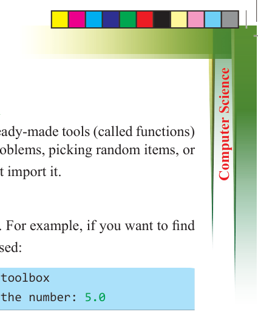
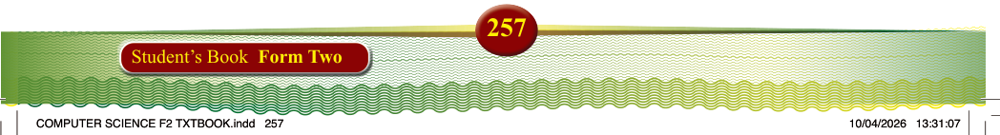

257
Student’s Book Form Two
Importing and using simple modules in Python
In Python, a module is like a toolbox. It contains ready-made tools (called functions) that help to do specific tasks like solving maths problems, picking random items, or working with time. To use a module, we must first import it.
Importing a whole module
You can use import to bring in the whole toolbox. For example, if you want to find the square root of 25, the following code can be used:
import math # This code import the math toolbox print(math.sqrt(25)) # This code output the number: 5.0
Importing just one tool
Instead of importing the whole toolbox, you can take only what you need. For example,
observe the following code:.
from math import sqrt # This code imports only the square root tool print(sqrt(49)) # This code will output: 7.0
Giving a module a nickname
To make typing easier, you can give the module a short name (called an “alias”). For example, you can use a short name to calculate sqrt of 36:
import math as m # This code gives "math" the nickname "m" print(m.sqrt(36)) # This code output: 6.0
Common Python modules in everyday school life
There are three useful and common modules that students can use in school projects or class exercises:
(a) Math module
This module helps to solve mathematical problems. The common tools in the math module are:
(i) sqrt(x) – Finds the square root
(ii) pow(x, y) – Raises x to the power y
(iii) pi – The value of π (used in circles)